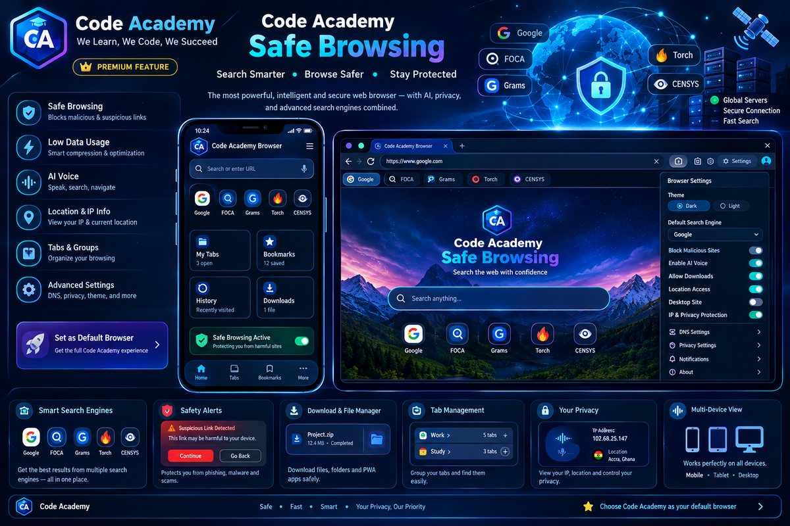

Privacy & safety
Quick checks before you browse
Find the web, check a link before opening it, and keep your browsing tools close. Data Saver avoids extra activity from this app; websites control the data their own pages use.

Know what this page can check: link checks are local heuristics, not a guarantee that a site is safe. Some websites block embedded viewing; use Open externally when needed.
Quick checks before you browse
For learning and authorized asset checks
Censys is an internet-asset research platform, not a general web search engine. Only investigate systems you own or are authorized to assess.